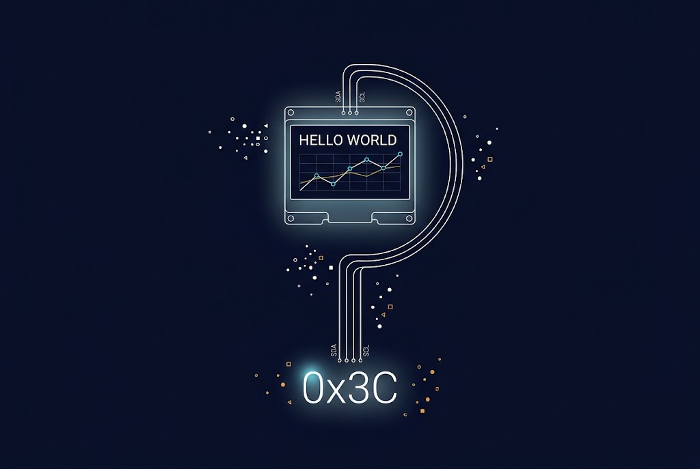
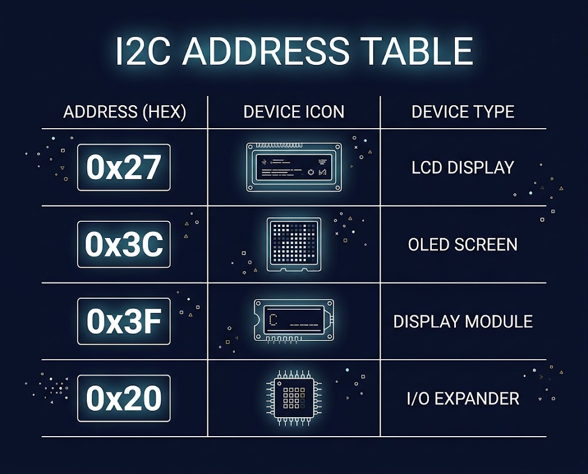
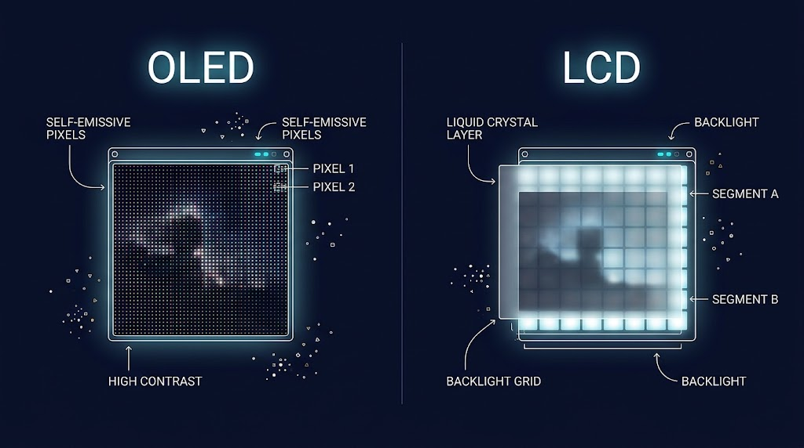

در این جلسه با OLED 128x64 SSD1306 کار میکنیم.
پروتکل I2C، آدرسدهی و کتابخانههای نمایشگر

یک سنسور دما را به Arduino وصل کردهاید. حالا چطور میتوانید دما را ببینید؟
Serial Monitor نیاز به کامپیوتر دارد.
اما اگر بخواهید یک دستگاه مستقل بسازید؟
| نوع | اندازه | ویژگی | کاربرد |
|---|---|---|---|
| PMOLED | ۰.۹۶ تا ۲ اینچ | ارزان، کممصرف | دستگاههای قابل حمل |
| AMOLED | ۱ تا ۷ اینچ | کیفیت بالا، انعطافپذیر | گوشی، ساعت هوشمند |
| Micro-OLED | ۰.۲ تا ۱.۵ اینچ | چگالی پیکسل بسیار بالا | VR/AR، دوربین |
| OLED خودرویی | ۱۲ تا ۴۰ اینچ | مقاوم، شفاف | داشبورد خودرو |
| OLED صنعتی | ۱۳ تا ۲۷ اینچ | دقت رنگ بالا، عمر طولانی | تجهیزات پزشکی |
در این جلسه با OLED 128x64 SSD1306 کار میکنیم.
۲ سیم: SDA (داده) + SCL (کلاک)
✓ فقط ۲ سیم
✓ چند دستگاه با آدرس
✓ استاندارد OLED
✗ کندتر از SPI
۴ سیم: MOSI + MISO + SCK + CS
✓ بسیار سریع
✓ مناسب نمایشگرهای بزرگ
✗ ۴ سیم
✗ هر دستگاه CS جداگانه

در پروتکل I2C، هر دستگاه یک آدرس ۷ بیتی منحصر به فرد دارد.

• پیکسلهای خودنور
• کنتراست عالی
• مصرف کم
• گرافیکی
• کاراکتری (۲ خط × ۱۶ کاراکتر)
• ارزان
• نیاز به نور پسزمینه
• برای متن ساده
راهاندازی LCD کاراکتری با ماژول I2C. مقایسه عملی با OLED و درک تفاوتهای کاربرد.
خواندن دما از سنسور DHT22 و نمایش آن روی LCD 16x2. کاربرد واقعی نمایشگر در سیستمهای اندازهگیری.
راهاندازی اولیه OLED SSD1306 و نمایش متن. پایهای برای تمام پروژههای گرافیکی.
پیدا کردن آدرس I2C دستگاههای متصل. مهارت حیاتی برای عیبیابی مدارات.
پروژهای کاملتر: نمایش درصد رطوبت خاک، وضعیت (DRY/OK/WET) و حتی تصویر گیاه روی OLED.
کاملترین شبیهساز آنلاین Arduino با پشتیبانی از OLED، LCD، DHT22 و کتابخانههای Adafruit. کدهای واقعی Arduino در مرورگر اجرا میشوند [citation:3].
شبیهساز رایگان و متنباز. کد Arduino را با arduino-cli کامپایل میکند و روی یک پردازنده AVR8 شبیهسازیشده اجرا میکند. از OLED و LCD پشتیبانی میکند [citation:4][citation:10].
نسخه ۲ با موتور شبیهسازی WASM (Rust) بازنویسی شده. از LCD1602، LCD2004 و SSD1306 OLED پشتیبانی میکند. رایگان برای شروع، نسخه Maker با ۷ دلار در ماه [citation:5].
💡 توصیه نهایی: برای این جلسه از Wokwi استفاده میکنیم چون هماهنگ با جلسات قبل است و کدهای آن مستقیماً روی سختافزار واقعی هم کار میکنند. Velxio و Scratchboard گزینههای خوبی برای کاوش بیشتر هستند.
هر گروه یک صفحهی نمایشی خلاقانه برای OLED طراحی میکند که شامل: 🎨 آیکون ساده، نوار پیشرفت، پیام متحرک، و دادههای سنسور
🏆 بهترین طرح در گالری کلاسی به نمایش درمیآید و رأیگیری میشود.
لطفاً به این پرسشها فکر کنید و پاسخ دهید:
مزیت اصلی I2C نسبت به اتصال مستقیم (پارالل) چیست؟
سه مرحله عیبیابی برای OLED که روشن نمیشود نام ببرید.
برای یک دستگاه قابل حمل، کدام را انتخاب میکنید و چرا؟
چه زمانی نمیتوان از OLED استفاده کرد؟
یک مثال واقعی از صنعت بیاورید.
از دادههای خام تا نمایش زیبا!
منابع پیشنهادی: Adafruit SSD1306 Library